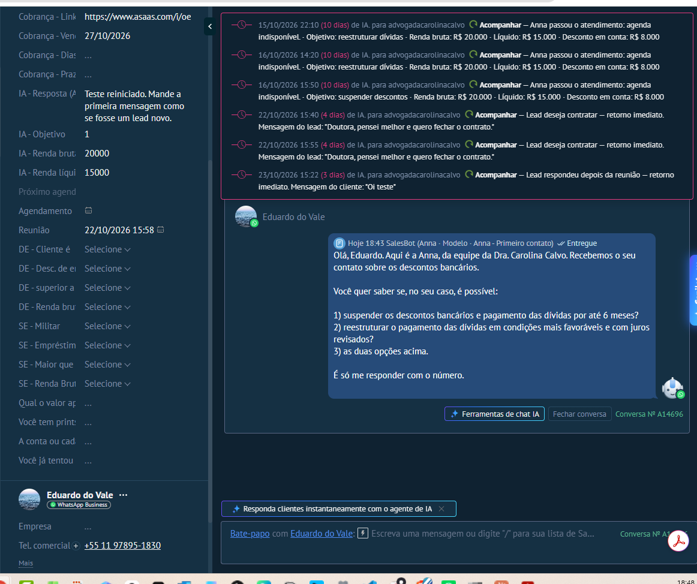
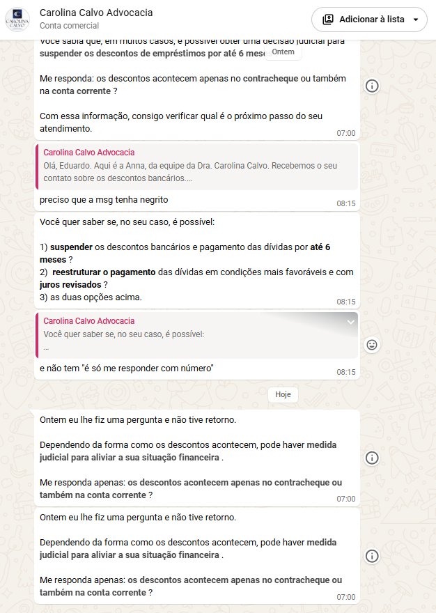
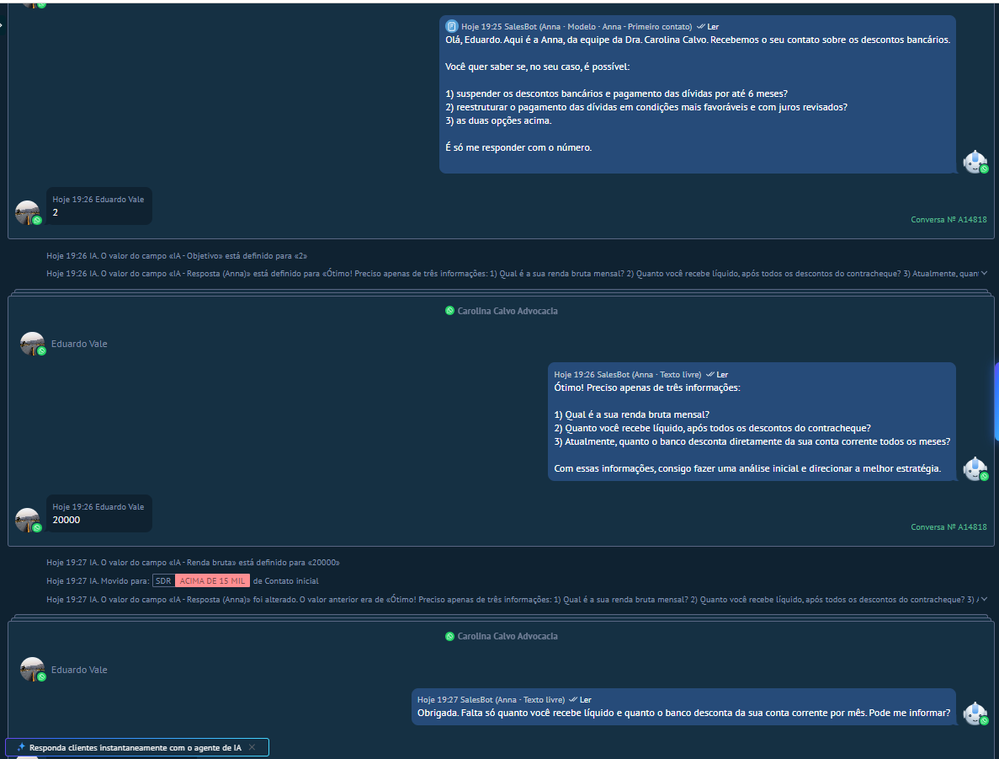
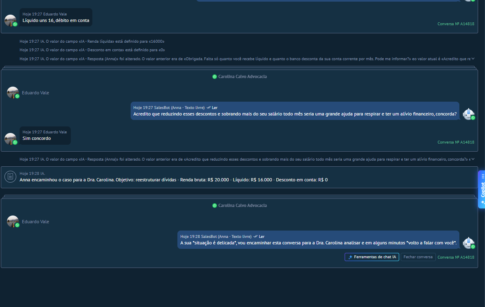
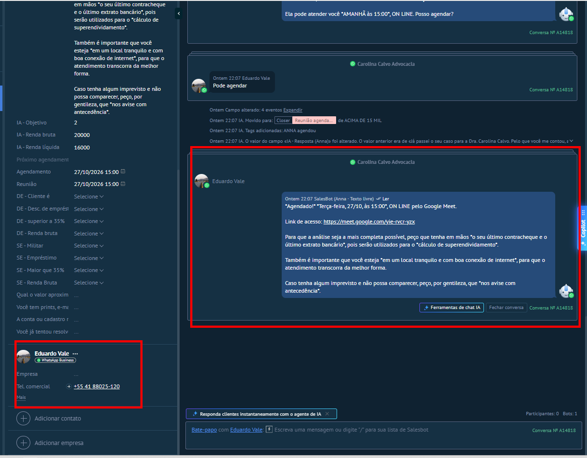
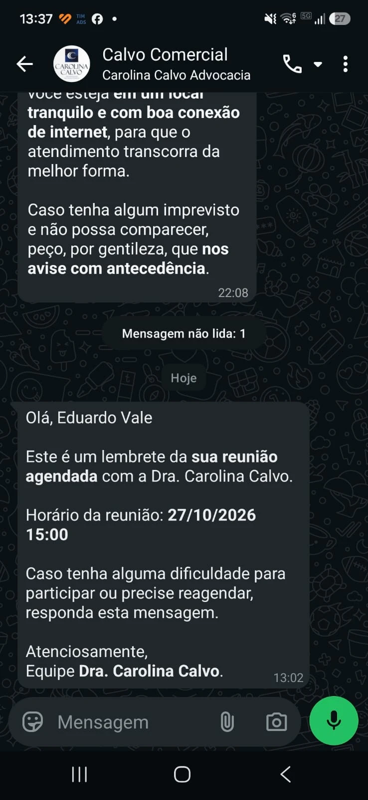
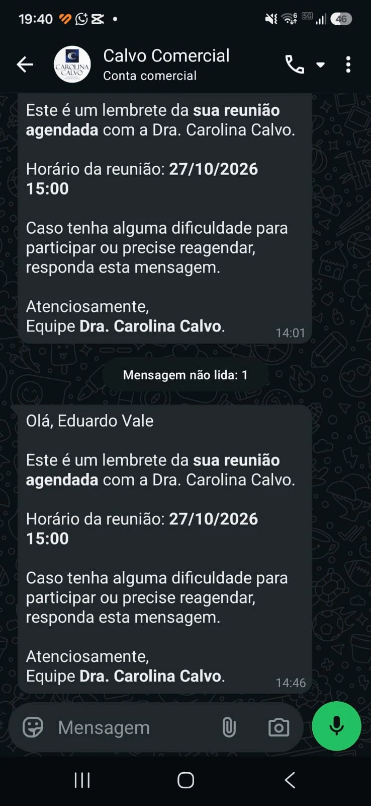

Dra. Carolina, este relatório traz as evidências dos testes que a senhora pediu, feitos pela nossa equipe entre 23 e 29/10. Usamos dois números de teste da Control Gestão, o (11) e o (41). Os horários vêm do diário da Anna e dos registros de envio do Kommo. As falhas encontradas estão na seção 4, com as correções.
| 1. Envio e entrega da 1ª mensagem a um lead novo, sem conversa anterior A correção está pronta do lado da Anna: no lead de formulário, a saudação passa a sair por um robô do próprio Kommo, com o modelo aprovado pela Meta, já com o seu texto novo, e a Anna confere que ela saiu. Falta o modelo "Anna - Primeiro contato v2" ser aprovado pela Meta e o robô de saudação ser ligado no Kommo. O teste com um número que nunca falou com o escritório vai como complemento deste relatório. | em andamento |
| 2. Início automático da qualificação quando o lead responde Teste do número (41) em 26/10: o lead respondeu e a Anna seguiu o roteiro sozinha até o agendamento, sem ninguém da equipe (seção 2). | comprovado |
| 3. Régua de follow-ups com tempos reais, inclusive fora da janela de 24 horas Teste do número (11), sem encurtar nenhum intervalo. Follow 1 em 27/10 às 07:00 (dentro da janela). Follow 2 em 28/10 às 07:00, cerca de 36 horas depois da última mensagem do lead, ou seja, fora da janela, com o modelo aprovado. O Follow 3 (30/10) e o Follow 4 (02/11) vão como complemento. | comprovado em parte |
| 4. Situação de cada envio: programada, tentativa, enviada e entrega confirmada Cada mensagem aparece na seção 2 com a hora programada, a hora em que o Kommo registrou a saída pelo seu WhatsApp e a prova de entrega (selo "Entregue/Lida" no Kommo ou print do celular). Quando o registro de saída não aparece, a Anna anota no card que nada chegou ao lead. | comprovado |
| 5. Nenhuma alteração na integração oficial e nenhuma credencial nova na Meta Nada foi alterado na integração do WhatsApp nem na sua conta Meta. A única conexão nova é a do Google Agenda, que a senhora autorizou em 26/10. | comprovado |
O lead escreveu e não respondeu mais. Os follow-ups saíram nos intervalos reais da régua, sempre entre 7 h e 20 h.
| Quando | Quem | Mensagem | Programada | Saída registrada no WhatsApp | Entrega |
|---|---|---|---|---|---|
| 26/10 18:43:43 | lead | "Oi" | |||
| 26/10 18:43:48 | Anna | 1ª pergunta (modelo aprovado "Anna - Primeiro contato") | resposta imediata | 18:43:48 | Kommo: "Entregue" (anexo A) |
| 27/10 07:00 | Anna | Follow 1 (modelo aprovado "Follow 1") | 27/10 07:00 | 07:00:09 | print do celular (anexo B) |
| 27/10 08:15 | equipe | 3 mensagens digitadas no Kommo sobre o texto da 1ª pergunta | 08:15:28 a 08:15:50 | a Anna saiu do atendimento (regra correta); régua restaurada às 08:30 só para este teste | |
| 28/10 07:00 | Anna | Follow 2 (modelo aprovado "Follow 2"), fora da janela de 24 h | 28/10 07:00 | 07:00:04 (e 07:00:14, duplicado: ver seção 4) | print do celular (anexo B) |
| 30/10 07:00 | Anna | Follow 3 (modelo aprovado "Follow up 3") | 30/10 07:00 | complemento | complemento |
| 02/11 07:00 | Anna | Follow 4 (modelo aprovado "Follow up 4") | 02/11 07:00 | complemento | complemento |
Número que nunca tinha falado com o escritório. O lead escreveu primeiro; o caso do lead de formulário é o ponto 1, que vai em complemento.
| Quando | Quem | Mensagem | Programada | Saída registrada no WhatsApp | Entrega |
|---|---|---|---|---|---|
| 26/10 19:23:59 | lead | "Oi" (número que nunca tinha falado com o escritório) | |||
| 26/10 19:25:20 | Anna | 1ª pergunta (modelo aprovado) | ao liberar o card de teste | 19:25:20 | Kommo: "Lida" (anexo C) |
| 26/10 19:26:30 | Anna | lead respondeu "2" → 2ª pergunta (os três valores) | resposta imediata | 19:26:30 | Kommo: "Lida" |
| 26/10 19:27:02 | Anna | lead informou só a renda (R$ 20.000) → card movido para SDR › ACIMA DE 15 MIL; pediu só o que faltava | resposta imediata | 19:27:02 | Kommo: "Lida" |
| 26/10 19:27:32 | Anna | lead: "Líquido uns 16, débito em conta" → mensagem do alívio (ver seção 4) | resposta imediata | 19:27:32 | Kommo: "Lida" (anexo C) |
| 26/10 19:28:00 | Anna | lead concordou → encaminhamento para a Dra. e nota com o resumo no card | resposta imediata | 19:28:00 | Kommo: "Lida" |
| 26/10 20:00:07 | Anna | oferta de horário: "AMANHÃ às 15:00", 30 minutos reais depois | 19:58 | 20:00:07 | Kommo (anexo D) |
| 26/10 22:07:59 | Anna | lead aceitou → confirmação com o link do Google Meet; reunião criada na sua agenda; card em Closer › Reunião agendada | resposta imediata | 22:07:59 | Kommo (anexo D) |
| 27/10 13:02 · 14:01 · 14:46 | robô do escritório | lembretes de 2 h, 1 h e 15 min antes, a partir do campo "Reunião" preenchido pela Anna | pelas automações do escritório | 13:02:00 · 14:01:49 · 14:46:49 | print do celular (anexo E) |
| 27/10 14:51 | — | reunião de teste apagada da sua agenda, como avisado | |||
| 28/10 14:00:06 | Anna | pós-reunião, 23 h depois da reunião: "Ontem você esteve em reunião com a Dra. Carolina Calvo…" | 28/10 14:00 | 14:00:06 | registro do Kommo |
| Data | Teste | Resultado |
|---|---|---|
| 23/10 | Cobrança pelo Asaas: cobrança real de R$ 5 no cadastro de teste da Control Gestão | Aviso com o link enviado às 15:45, com saída registrada no WhatsApp. PIX pago às 15:48: o Asaas avisou a Anna e a confirmação de pagamento saiu no mesmo minuto. O cliente real que estava na mesma rodada não recebeu nada. Depois do teste, o envio real voltou a ficar desligado. |
| 23/10 | Pós-reunião: resposta do cliente depois da reunião | O cliente respondeu às 15:07. O card foi para Closer › Retorno imediato, com tarefa prioritária, e nenhuma mensagem foi enviada a ele. |
| 26/10 | Google Agenda, depois da sua autorização | A Anna leu os horários ocupados, criou uma reunião de teste com link do Google Meet e a apagou. No teste do (41), o horário oferecido respeitou a sua agenda. |
| 26/10 | Reunião movida ou apagada direto na agenda | Antes de cada lembrete, a Anna confere a reunião no Google. Se ela foi apagada ou mudou de horário, o lembrete não sai e a equipe recebe uma tarefa. |
| Data | O que aconteceu | Correção |
|---|---|---|
| 26/10 | "débito em conta", sem dizer o valor, foi entendido como desconto zero, e saiu a versão "sem desconto" da mensagem do alívio. | O desconto só é considerado zero quando o lead diz que não tem desconto. Sem valor, a Anna pergunta. |
| 28/10 | O Follow 2 do número (11) saiu duas vezes (07:00:04 e 07:00:14). Causa: a restauração manual do teste depois da interrupção de 27/10 deixou duas tarefas iguais na fila. | Cada etapa da régua agora sai uma única vez, mesmo com tarefa repetida na fila. A duplicata do Follow 3 foi removida. |
| 26/10 | Ao terminar a autorização da agenda, a página mostrava erro, apesar de o acesso estar correto. | A conferência final passou a usar só as permissões da Anna. A agenda foi testada logo em seguida. |
| 27/10 | Mensagens enviadas pelos robôs antigos do Kommo (os lembretes) contam, para a Anna, como "a equipe escreveu", e ela sai do atendimento daquele card. | Sem efeito no Closer, onde a Anna não conversa. Os robôs antigos que mandam mensagem a leads do SDR serão revistos na ativação. |







Control Gestão · 29/10/2026